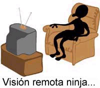

Visión remota ninja, muy remota
El lector Clay Jones, de Nashville, Tennessee, cuestiona la legitimidad del Discovery Channel:
Anoche, el canal de “ciencia” Discovery transmitió un especial de una hora sobre los misterios de los ninjas. El programa exploraba los mitos de sus orígenes, sus vidas como espinas en el costado de los samurais, y su eventual empleo como guardaespaldas personales de los shogunes. Se presentaron y refutaron varios mitos, tales como su supuesta habilidad de volverse invisibles —usaban trampillas y salidas ocultas, en adición a una capacidad para pasar inadvertidos sin paralelo en la época— y de volar. Sin embargo, al llegar a las historias de la “visión remota” de los ninjas para planear asesinatos, y de PES para adivinar los movimientos de su oponente, hubo un súbito cambio para peor.
Un ex “vidente remoto” de la CIA presentó los “hechos” de que la CIA usaba videntes remotos para buscar instalaciones misilísticas rusas, y que nuestro gobierno pagó millones de dólares para investigar la PES. Si nuestro gobierno creía en eso, debe ser verdad. El hombre aseveró con toda seguridad que fácilmente los ninjas podían entrenarse para lograr estados alterados de conciencia y ver la ubicación de sus objetivos, incluso en qué habitación del castillo podrían estar. Para demostrar esto, trajo un equipo de videntes remotos, dijo unas breves palabras sobre que ninguno de ellos sabía nada sobre el objetivo o su ubicación, y los hizo utilizar su poderes para localizarlo a él [el objetivo]. Los resultados fueron presentados con gran excitación.
La mitad de los videntes remotos se acercó bastante al objetivo y uno de ellos lo localizó con precisión. Además, todos vieron que era hombre y usaba barba. ¡Asombroso! ¿Quién no sería creyente luego de este triunfo de los estudios paranormales? De alguna manera, no creo que el millón de dólares de usted vaya a ningún sitio. Incluso mostraron cuando los atildados psíquicos eran llevados a la casa y exclamaban cosas como: “¡Sí, ése es el arco que yo vi!”. Era doloroso de ver, por decir poco. Había un escéptico de muestra, un historiador de los ninjas que perceptivamente aseguró que la idea de ninjas psíquicos es absurda. Dijo que usaban un sigilo extraordinario, una red de espías y misiones múltiples de reconocimiento antes de cada atentado. Querían que el enemigo creyera que tenían poderes mágicos y psíquicos, y aprovechaban al máximo la paranoia resultante.
Me entristece ver lo que se hace pasar por ciencia. ¿Estaban los productores tan desesperados por algo paranormal que fueron ciegos al patente fraude de los videntes remotos, o fueron ellos mismos partícipes del embuste? Si no se puede confiar en el Discovery Channel o el Learning Channel, ¿qué opción nos queda a las personas que deseamos información entretenida pero precisa para nosotros o para nuestros hijos?
Clay, debo decir que, a juzgar por tu descripción, no tengo claro que el “fraude” esté probado, aunque no vi ese programa. Sin embargo, con respecto a la ética implicada, a los productores sencillamente no les importa. Sólo quieren complacer a los anunciantes, y presentaciones acríticas como ésta son perfectas para ese objetivo. El Discovery Channel ha descubierto que su supervivencia depende del disparate, de modo que ése es su principal producto…
Un aspirante irritado y codicioso
Sé muy bien que no necesito convencerlos del nivel de absurdo de muchas de las presentaciones que llegan a la JREF con respecto al premio de un millón de dólares. Sin embargo, aunque lo que sigue no es una presentación formal de “Rudy del clan Campbell”, tuve que admitir la relativa astucia del truco de evadirse con anticipación. La ortografía y la gramática son las del e-mail original de este hombre irritado y desorganizado que se siente tan amenazado por el desafío:
Que curiosa, la invitacion a su expansivo desafio, no habra ningun problemas. Sin embargo, un millon de dolares es poco dinero por lo tengo como prueba sobre lo paranormal. Por lo que tengo tomare ese millon con 2 mas. Por 3 millones le dare la prueba fotografica mas increible absolutamente fantastica que el mundo haya visto. Pues no solo tengo la foto, tambien tengo cantidad de respaldos para mi afirmacion. El Dali Lama para empezar, el cita verbalmente lo que hay en mi sorprendente evidencia fotografica. Junto a Carl Jung, Long Chen Rabjam, Linda Forman, La Santa Biblia, El Libro Tibetano De Los Muertos. Hey James que sabes de una conexion con un cordon de plata, aqui tengo suficiente para iluminar al mundo. Hazte un favor y ve a comprar Dormir soñar y morir del Dali Lama, en la pagina 190 de ese libro esta la cita del Dali Lama. Del corazon del Mayitrea se emite algo como un cordon de nubes que va a otro ser con el que tengas una relacion muy especial. Quieres pruebas James Randi, 3 millones es lo que cuesta que muestre lo que tengo como prueba. La descripcion de la foto es esta. Forma de cuerpo completo mostrando el sexo, exhibiendo embarazo con conexion con cordon de plata al ojo izquierdo de mi amigo cuadriplejico. Un corazon simbolico se ve sobre la cabeza de ella, la extremidad superior derecha de el señala la Santa Biblia que esta sobre la cama. La cita del Dali Lama y todas las otras fuentes que tengo es el respaldo mas increible a esta foto que muestra la realidad ultima que tu y todo el mundo vera jamas. En las escuelas de lo paranormal y muchas otras grandes puertas esta Rudy del clan Campbell.
Puede contactarme por este email. Espero oír de usted con respecto a este e-mail.
Humm, bien, sólo respondí a este mensaje preguntando si podía publicar la perorata, pero le dije que otros dos millones están actualmente fuera de discusión. Sin embargo, a juzgar por mi experiencia en tales asuntos, adivino que “Rudy” ha dado con una fotografía con un defecto de alguna clase, una mancha difusa que él ha decidido que es paranormal. Los aficionados no pueden aceptar que en las fotos hay pequeñas variaciones de esta clase y les atribuyen grandes significados, igual que algunos “encuentran” patrones en hojas de té o en nubes que alguna potencia mística “dispuso” para ellos. Y ofrecer al Dalai Lama como un experto en tales asuntos es como si Gene Autry 1 definiera el cálculo. “Rudy” me respondió, luego de apartar su cordón de plata de en medio, otra vez con su ortografía y gramática original:
Tratar con lo paranormal es de gran alcance y quizas demasiado para su empresa y su parloteo de un millon de dolares. Por cualquier razon que quiera usar mi diatriba como la llama para su sitio web, adelante a toda costa, si genera interes en su falta de verdadera percepcion. No estoy haciendo afirmaciones falsas, quizas usted y su empresa no tienen los medios financieros para aceptar mi desafio. Un millon de dolares es muy poco Sr. Randi, para lo que tengo, sin embargo, si se preocupa por investigar más y no dispone de los otros dos millones, ponga su millon de dolares donde esta su boca. El Sagrado Rupakaya es la visión expansiva y expensiva de este fenomeno.
Muy bien, me imaginé que ahora que había bajado su precio podríamos hacer negocios. Le dije que solamente tenía que completar el formulario, especificando qué haría, bajo qué circunstancias y con cuánta exactitud. Ah, pero luego llegó el siguiente texto descoyuntado, de modo que cualquier esperanza por su participación se desvaneció rápidamente. Otra vez, éstas son su ortografía y gramática originales, de modo que no piensen que necesito ayuda editorial.
El azote de la ignorancia cubre toda la patraña de un millon de dolares de su empresa. Usted pequeño peón no ha comprendido la revelacion del Sagrado Rupakaya. Los tres millones eran para seducir su hambre de pruebas, su empleado fue facilmente guiado por su ignorancia. POR QUE ni siquiera saben escribir. Un millon de las incontables colecciones monetarias es un pañuelo descartable para el Sr. Randi. Su banalidad no mancillará el valor de lo que es Sagrado. Gracias por las informaciones de su gran libro, Los curanderos. Su conocimiento fue apreciado, estamos a mano, le he ahorrado un millon de dolares. Paciencia Sr. Randi, encontrara lo que busca. La Esencia En Exhibicion Pura aliviara su fatiga y le ahorrara su dinero. Mientras tanto alcance lo que falta, use sabiamente su valor monetario, suministre a su personal de inteligencia de respeto.
La exagerada fastuosidad, la arrogancia y la ignorancia son bien visibles aquí. Sin embargo, es posible se sólo sea un jovencito con acceso a un teclado, pero la experiencia me ha enseñado que incluso los adultos pueden exhibir estas características. Aparentemente “Rudy” sólo barbotea por ira y frustración, de modo que no creo que volvamos a saber de él.
Pero seguramente odiaría perderme la “Esencia en Exhibición Pura”, cualquier cosa que eso sea. Espero poder venderla en EBay. Y tomaré un tazón de ese Sagrado Rupayaka, por favor. ¡No, no, pruébalo tú primero…!
Los expedientes de nuestro desafío
Para ponernos al día: El laborioso Kramer, que presta voluntariamente sus servicios aquí, en la JREF, ha anunciado que la lista total de aspirantes llega a 323. Son:
65 expedientes “abiertos”. 5 que están siendo negociados. 253 casos “cerrados”, que incluyen muchos en los que faltaba el formulario oficial, estaban en un lenguaje extranjero, llegaron sin señas del remitente, eran textualmente incomprensibles, o estaban escritos a mano con tan mala caligrafía que no pudimos leerlos.
Y más llegan con regularidad para mantener ocupado a Kramer…
Oferta para investigar un asunto
El doctor Karl Spracklen, de la Universidad Metropolitana Leeds del Reino Unido, se refiere a un artículo recientemente aparecido aquí bajo el título “¿En cuál equipo está usted?”:
Soy un ávido lector de su comentario semanal y un académico que enseña e investiga cuestiones relacionadas con el deporte, la identidad social y la pertenencia y exclusión (mi tesis de doctorado versaba sobre la construcción de la masculinidad y la comunidad en los dos códigos de rugby en el norte de Inglaterra). Puedo decir que su corresponsal anónimo estaba totalmente en lo cierto al hablar de cómo el deporte socializa a las personas en modos de ver y entender el mundo: esto se ha mostrado, por ejemplo, en la manera en que el orden de género se mantiene y reproduce a través del deporte. Ha habido mucha investigación relacionada con el deporte, pero la mayor parte ha sido sobre identidades socializadas, y no creo que haya habido una síntesis de ideas entre la sociología del deporte y la sociología del conocimiento.
Si alguien está dispuesto a hacer una gran donación para examinar la socialización de lo irracional a través del deporte, ¡estaré feliz de conversar! O, como alternativa, si hay académicos que investigan la irracionalidad y están interesados en lo que la sociología del deporte puede contribuir a la discusión, por favor que me contacten y encontraremos papers y proyectos en los que trabajar conjuntamente. Puedo ser contactado vía e-mail en k.spracklen@leedsmet.ac.uk
El fabuloso Baba Rodante
El lector Chris Wuestefeld hace algunos cálculos para nosotros:
Randi, es posible que me recuerde por haberle escrito sobre el legislador de California que quería codificar el feng shui. Esta vez quiero llamar su atención sobre dos cosas. La primera es un hombre santo de India que hace afirmaciones que no pueden ser ciertas, pero que el reportero del L.A. Times acepta sin cuestionar. La segunda es un aspecto irónicamente triste de las acciones del mencionado sujeto.
El artículo habla de un “Baba” de la India que rueda por la carretera para promover la paz demostrando su amor por todo, incluso por nuestros caminos. Rueda por la carretera como un tronco, recorriendo, según se dice, cientos o miles de millas. El primer problema de este artículo es la velocidad que se dice que el hombre es capaz de desarrollar. Transcribo:
La velocidad del Baba Rodante fue cronometrada en unas 6 mph (9,7 km/h) en este pueblo rural, donde el tránsito y las personas que salieron a recibirlo disminuyeron su ritmo. Pero dice que cuando sale a la autopista o rueda por una buena pendiente, su velocidad alcanza las 15 mph (24 km/h).
Sin embargo, incluso la cifra menor parece bastante improbable, y 15 mph es una milla (1,6 km) cada cuatro minutos, lo cual era un desempeño prácticamente imposible para los mejores corredores del mundo. Dado que sonaba dudoso, hice algunas cuentas:
La circunferencia de mi cintura mide un poco menos de 36 pulgadas (91,4 cm). El Baba parece mucho más menudo que yo, pero démosle el beneficio de la duda. Usemos 36” como la circunferencia del cilindro rodante que forma su cuerpo. Una milla = 63.360 pulgadas. 1 mph = 63.360 pulgadas/hora. Debo girar a unas 29 RPM para desarrollar 1 mph, o aproximadamente un giro cada 2 segundos. Por lo tanto, para alcanzar las 6 mph debo rodar a 176 RPM, o tres revolucines por cada segundo, lo cual parece difícil excepto en una cuesta muy empinada.
Para alcanzar 15 mph debo girar a 440 RPM, o 7,3 revociones por segundo. Estoy seguro de que esto es imposible sin ayuda mecánica, y apuesto a si alguien lo intentara, se le saldrían los sesos por las orejas. El resultado final, entonces, es un reportero más interesado en una historia sensacional que en hacer las verificaciones más elementales para una cobertura precisa.
El segundo problema es igual de grave, pero de un modo distinto. Vuelvo a transcribir: Más de 60 personas llegaron en busca de sanación por la fe, incluyendo a un muchacho ciego, otro lisiado de una pierna, una anciana con jaqueca y un hombre con almorranas. Luego de cada tratamiento, el hombre entregaba lo que uno de sus discípulos dijo que eran cenizas sagradas, envueltas en páginas arrancadas de un texto escolar de biología. Qué triste que es esto, destruir un texto de biología —que podría ayudar a alguien educando a un científico que algún día descubriera una cura— para dar respaldo a la “sanación” por la fe.
Debe parecerle a usted, Randi, que lucha contra la hidra. Cada vez que corta una cabeza de la bestia, surgen más para prolongar la amenaza.

Sin comentarios…
Curanderismo en los grandes negocios
El lector Brett Campbell está indignado:
Acabo de recibir por correo un nuevo catálogo de Land’s End (http://www.landsend.com) ¡y un catálogo de ropa hizo que mi sangre hirviera! Les he comprado muchas cosas en el pasado, pero se terminó. Mientras hojeaba el catálogo, me encontré con ¡un artículo de dos páginas que adhería a los beneficios de la reflexología! Fui al sitio Web para ver si allí estaba el mismo artículo, pero no parece que sea así. Por lo tanto, lo transcribiré aquí. ¡Si hay errores serán míos, no de ellos! Mis comentarios están entre paréntesis.
¡Pies Felices! Trate a sus pies de la manera adecuada con la reflexología, y siéntase bien en todo su cuerpo.
Cuando al final del día se saca los zapatos y pone sus pies en alto, es posible que esté haciéndole un favor a todo su cuerpo. La Reflexología del Pie, basada en la premisa de la relación única de los pies con toda la anatomía humana, puede disminuir el dolor, mejorar la circulación, reducir el estrés y la tensión y ayudar a eliminar síntomas (¿Síntomas? ¿Síntomas de qué? Bonito y difuso). La reflexología es un enfoque holístico integral para personas de todas las edades, que mejora las funciones neurológicas, bioquímicas y eléctricas del cuerpo (Grandes palabras que no significan nada). En otras palabras, mente, cuerpo y espíritu son afectados en una sesión típica, ya sea que usted necesite una puesta a punto general o intente recuperar la salud. (¿También el espíritu? ¡No hay nada que la reflexología no pueda hacer?) La gran mayoría de las personas percibe los beneficios de reducir el estrés (¡no me digan!), lo cual a su vez minimiza los síntomas físicos. (De nuevo, ¿síntomas de qué?) La reflexología autoaplicada es efectiva, pero nada es mejor que una sesión suministrada por un profesional certificado. (¡Ka-ching!) Hemos solicitado a nuestros amigos de la Asociación Reflexológica de América que indicaran algunos lugares del pie y los correspondientes síntomas que la reflexología puede tratar. (¿Amigos, eh? Me pregunto si algo de dinero habrá cambiado de manos, o por lo menos algunas sandalias.) Así que relájese, ponga sus pies en alto y dele una oportunidad a la reflexología. Creemos que sentirá mejor en todo su cuerpo. (¡Excepto en su billetera!)
A continuación tienen un diagrama que muestra las áreas del pie y con qué parte del cuerpo se corresponden. Éstas son las dolencias con las que las secciones del pie supuestamente se conectan o ayudan a curar: jaqueca, dolor de muelas, problemas cervicales, estrés, ansiedad, dolor, fatiga muscular, dolor de espalda, problemas en los hombros, asma, problemas pulmonares y ciática. Finalmente, al pie del artículo se lista la información de contacto: “… para información, referencias y programas de enseñanza de reflexología…”
Permítame añadir un par de cosas, y luego formular una pregunta. Creo que es completamente irresponsable que una gran compañía internacional promueva el curanderismo. Creo que la gente de Land’s End debería estar avergonzada, y así se lo he dicho. También les dije que me eliminaran de su lista postal porque no tengo intención de apoyar a una compañía que respalda la ignorancia. Por último, quisiera preguntarle: ¿cómo es que esta medicina basura ahora es algo normal? ¡Tienen una Asociación Reflexológica de América, por favor! ¡Qué gente inteligente debe ser! Yo siempre pensé que la reflexología era algo para chiflados fronterizos, pero parece que me equivoqué. De algún modo los chiflados fronterizos ahora están en el respetable centro, ¡y no me gusta nada!

Un excelente ejemplo de chifladura
Es casi imposible hacerle entender a una persona común el nivel de chifladura de la noción de “fotografía espiritual”. En nuestra biblioteca hay varios libros sobre la idea, e incluso un breve paseo por ese pantano resulta en un mayor entendimiento de la profundidad del problema. Sin embargo, el lector Dominic Kearney nos ha conseguido un sitio Web que hace muy bien el trabajo. Está escrito y mantenido por creyentes inquebrantables que han perfeccionado el arte de la racionalización, como podrán comprobarlo si van a http://www.crystalinks.com/photo.html. Asegúrense de estar sentados, pues podrían lastimarse al caer al suelo de la risa…
Hans el Listo vive
Hace exactamente un siglo, el famoso Kluge Hans (Hans el Listo) fue una importante celebridad en Alemania. Por lo menos, para ser un caballo. Varios científicos aseguraban que era capaz de responder preguntas y hacer cálculos, y esta incomprensión del simple acto de dar señales inconscientes a un animal se ha convertido en el clásico ejemplo clínico de tal error. En 1927, en los EE.UU., el Dr. Joseph Banks Rhine —el famoso investigador de la PES— se encontró con “Lady Wonder”, otro ejemplo de este acto circense, y fue totalmente embaucado por su actuación. Bien, es posible que los alemanes hayan vuelto a hacerlo.
Informan que han descubierto un border collie llamado Rico que entiende más de 200 palabras y puede aprender otras nuevas tan rápidamente como muchos niños. Motivada por esto, una integrante de la junta directiva del American Kennel Club 2 describió el informe como “una buena noticia para quienes hablamos con nuestros perros”. Agradeció a “los investigadores que han probado que quienes hablan con sus perros son comunicadores de avanzada, no sólo un montón de excéntricos”.
¿Qué causó toda esta excitación? Los investigadores alemanes informaron que Rico conoce los nombres de docenas de juguetes y puede encontrar aquél que su dueño le pide. Bien, tendría que revisar ese número tan grande —200—, pero no es ninguna gran revelación que los animales, particularmente los perros, pueden llegar a reconocer una gran cantidad de palabras. Además, los border collies son excepcionalmente inteligentes y aprenden con facilidad. El gran “salto de fe” consiste en tomar ese hecho básico y extrapolar de él la capacidad de reconocer oraciones y frases articuladas. Es ciertamente un gran salto. No, amigos, necesitaré mucha más evidencia para concluir que a Rico —o a cualquier otro perro— se le puede “hablar” —y que entiende— en lugar de que reaccione a una palabra e identifique el objeto o acción que representa.
Otra cosa que impactó a los medios fue que, al indicársele que recoja un objeto desconocido usando un nuevo nombre, Rico va al montón de objetivos y elige el elemento “nuevo”. No me parece difícil aceptar que un perro tan inteligente pueda aprender a buscar un nuevo objeto al oír una palabra nueva en la orden, pero de esto no se puede extrapolar que Rico comprende las complejidades de asociar esa palabra con ese objeto. Y recuerden, éste es un perro amaestrado, un actor que aprente a hacer suertes, no un perrito cualquiera. ¡Es el mundo del espectáculo, amigos!
Pero, igual que siempre, estoy dispuesto a que me muestren. No te ofendas, Rico. ¡Busca la billetera…!
Política de Torre de Marfil en acción
Nuestro amigo Daniel Sabsay (http://home.pacbell.net/sabsay/home) advirtió que el Dr. Jacques Benveniste, el ardoroso defensor de la homeopatía —o, por lo menos, de la “información digital” almacenada en el agua (?)— parece haber olvidado su promesa de mantener a los fanáticos entusiastas al tanto de su progreso para establecer la dilución a cero como una herramienta médica legítima. Con fecha del 5 de febrero de 1999, Daniel encontró en el sitio Web de Digibio (http://www.digibio.com) una excitante noticia sobre “una segunda máquina [de testeo automático]… que en estos momentos está en un laboratorio externo, donde investigadores independientes realizarán los experimentos en las próximas semanas”. Más tarde, en enero de 2001, apareció otro anuncio sobre “la automatización del protocolo de coagulación de plasma”, de la cual nada volvió a saberse. Daniel sugirió al Dr. Benveniste en un mensaje que le envió la semana pasada: “El mundo le ha dado el beneficio de la duda durante tres años y medio. Seguimos esperando el informe de progresos que nos ha prometido.”
Bien, el Dr. Benveniste respondió:
Por favor, recuérdeme quién es usted antes de que pierda mi tiempo contestando este mail absurdo y arrogante que me ha enviado.
Y firmó en un modo que no dejaba ninguna duda sobre que no debía ser molestado con trivialidades tales como mantener correspondencia con un don nadie poco instruido.
Dr. Jacques Benveniste, MD, AIHP, ACCP, PDG, Director Emérito de Investigación Inserm. Jefe, Laboratorio de Biología Digital, Presidente y CEO, DigiBio SA.
Ver www.guardian.co.uk/Archive/Article/0,4273,4152521,00.html. htm y www.weirdtech.com/sci/expe.html#qui
Tenemos aquí los síntomas de lo que he llamado “Síndrome de la Torre de Marfil”, esa extraña incapacidad de comunicarse con otros humanos sin antecedentes académicos. Suele manifestarse en PhDs y no hay remedio conocido. Benveniste agregó esta cita a su formidable lista de credenciales:
“Quand le fait qu’on rencontre ne s’accorde pas avec une théorie régnante il faut accepter le fait et abandonner la théorie.” — Claude Bernard. (Cuando un nuevo hecho no concuerda con la teoría reinante, se debe aceptar el hecho y abandonar la teoría.)
Me alegra mucho que el Dr. Benveniste esté tan consagrado a la memoria del Dr. Bernard (1813-1878), un laurado investigador francés que insistía en la investigación original y desarolló la ciencia de la fisiología experimental; una universidad de Lyon lleva su nombre. Esa dedicación está por ser puesta a prueba. Verán, los homeópatas tienen lo que llamarían su “teoría reinante”, la idea de que la homeopatía funciona. La ciencia ha descubierto más de un “nuevo hecho” que contradice la homeopatía; una cantidad de experimentos que refutan la noción de Hahnemann. En caso de que Benveniste elija no aceptar esos descubrimientos, podemos ahora anunciar que: ¡pronto habrá un conjunto nuevo, mejorado, abarcador, definitivo y aceptable de experimentos sobre la homeopatía!
Así es, empezaremos en cuanto la financiación esté completa. Este protocolo es interesante en el sentido se que los homeópatas mismos determinarán si sus pacientes recibieron la sustancia homeopática “real” o la de control. Será una serie a escala internacional, prolongada y meticulosa, con una base de datos muy apropiada y totalmente a doble ciego. Antes de que alguien me escriba diciéndome lo obvio (que sin importar cuán extensos y profundos sean los resultados finales, no habremos probado si la homeopatía es real o imaginaria), lo admitiré aquí y ahora. Cuando todo resulte un fracaso para los creyentes, quienes no hayan estado implicados cuestionarán la aptitud de quienes sí lo hayan estado. Se inventarán toda clase de excusas y coartadas, se nos acusará de hacer trampa, a pesar de la total aprobación y participación del “otro lado”, y no oiremos ni un murmullo sobre la posibilidad, obvia para otros, de que quizás, solamente quizás, no haya nada en esta forma de curanderismo.
Para demostrar mi buena fe y voluntad de cooperación, he acordado que en este caso específico, y sólo en éste, la JREF pasará por alto el test preliminar por nuestro premio de un millón de dólares. Era la única manera en que podíamos implicar personalidades importantes de la comunidad homeopática. Además, deben saber que el mayor costo de este proyecto es pagarles a los homeópatas. Así es: ¡Vamos a pagarles para que hagan la prueba por el millón de dólares! Creo que su insistencia en este punto era un modo de no tener que hacer el experimento. Ese requerimiento ha sido cumplido, y parece que ahora están comprometidos a hacerlo.
No, sé muy bien que encontrarán alguna otra manera de escabullirse. Tienen mucha experiencia en eso…
Pero sigan sintonizados…
Curanderismo veterinario
El Dr. Mike Eslea trabaja en el Departamento de Psicología de la Universidad de Central Lancashire, Reino Unido. Está consternado, como científico y como persona racional, por lo que le han ofrecido.
Desde hace poco tiempo tengo un perro, de modo que compré un libro sobre dieta, conducta, salud, etc. Se llama Essential Dog (Perro esencial), y es de Caroline Davis, quien también edita una revista llamada Your Dog. El libro parece bastante sensato por unas doscientas páginas, pero luego da un timonazo brusco en la dirección del lunático mundo de la medicina complementaria.
Hay literalmente docenas de aseveraciones que, si son ciertas, merecen el Premio Nobel. Mi favorita es la explicación de la sanación espiritual en la p181, pero las entradas sobre radiónica (p181) y cristales y gemas (p180) no le van en zaga. La autora reconoce desde el principio (p178) que no hay evidencia para la mayoría de las terapias que cita, pero luego dice que “en muchas circunstancias… se ha probado que causan curaciones aparentemente milagrosas”.
Según Davis, lo peor que puede suceder es que las terapias no tengan efecto: no considera las muchas posibilidades de daño directo (por ejemplo, a causa de pociones herbales marrulleras, etc.) o indirecto (cuando no se recibe tratamiento adecuado para lo que puede ser una enfermedad seria). Esto la lleva a la espantosa conclusión (en la lista de preguntas y respuestas en p179) que deben ser los dueños de perros, no los veterinarios, los que decidan qué tratamiento necesita el perro. ¡Si no le gusta la opinión de su veterinario, simplemente busque otro! En otras palabras, si su mascota sufre, arrástrela por todos lados hasta encontrar un veterinario que sea lo bastante corto de luces (o lo bastante codicioso) como para dar pábulo a sus supersticiones idiotas. ¿No es eso una incitación directa a la crueldad hacia los animales?
Doctor, éste es otro caso de una persona fuera de su área de experiencia, aunque no creo que haga falta ser un gigante mental para ver la “falacia” de la radiónica o el sinsentido de atribuir poderes a los cristales.
En conclusión
Esta semana visité a Martin Gardner —¡a punto de cumplir 90 años!— acompañado por Jamy Ian Swiss. Pondré un informe aquí.
Hemos recibido una serie de mensajes realmente presuntuosos de una compañía cinematográfica que asegura haber descubierto en Rusia, China y México niños que pueden leer con los ojos vendados. Y quieren el millón de la JREF. ¿Pueden decir “Lulova”? Más la próxima semana.
Y verán un artículo sobre Ronald Reagan escrito por el difunto Isaac Asimov…

Notas
- 1
-
Gene Autry: actor de westerns (1907-1988). Apodado “el cowboy cantante”. (N. del T.)
- 2
-
Institución que registra los perros de raza en EE.UU. (N. del T.)
Comentarios
Comments powered by Disqus